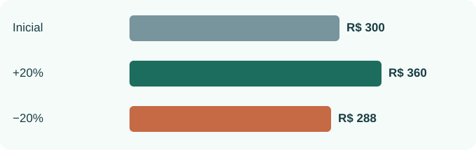

Preparação para o Vestibulinho ETEC · Módulo 02. Estude os conceitos, acompanhe os exemplos linha por linha e faça a fixação antes de passar ao próximo tópico.
Quando sabemos parte e total, dividimos a parte pelo total e multiplicamos por 100. Quando sabemos a parte e a taxa, dividimos a parte pela taxa decimal.
p = partetotal × 100; T = partep/100
Exemplo resolvido
38 de 50 questões foram acertadas. Em outra turma, 12 alunos equivalem a 20% do total. Encontre os dois resultados.
38 ÷ 50 = 0,76.
0,76 × 100 = 76%.
20% = 0,20.
12 ÷ 0,20 = 60 alunos.
Cuidado: O denominador deve ser o total correto, não a parte restante.
Exercício de fixação
Fixação 02 · autoral
Em um concurso, 45 dos 180 candidatos foram aprovados. Qual o percentual de aprovação?
Confira também o desenvolvimento no gabarito; respostas em formatos equivalentes podem exigir conferência manual.
Cada alteração é calculada sobre o valor atualizado. Multiplique os fatores de cada etapa, sem somar as taxas. A variação líquida é a diferença relativa ao valor original.
Vf = Vi × f₁ × f₂; variação = Vf − ViVi × 100%

Aumento de 20% e depois desconto de 20%: o segundo cálculo usa o preço atualizado.
Exemplo resolvido
Um produto de R$ 300 aumenta 20% e depois tem desconto de 20%.
300 × 1,20 = 360.
360 × 0,80 = 288.
288 − 300 = −12.
12 ÷ 300 × 100 = 4% de redução.
Cuidado: Aumento e desconto iguais não se anulam.
Exercício de fixação
Fixação 04 · autoral
R$ 500 sofre aumento de 10% e depois de 20%. Qual o preço e aumento total?
Confira também o desenvolvimento no gabarito; respostas em formatos equivalentes podem exigir conferência manual.
Para descobrir o valor inicial, divida o preço final pelo fator da alteração. No parcelamento, primeiro determine o preço total, desconte a entrada e divida pelo número de parcelas iguais.
Vi = Vf1 ± i; parcela = total − entradan
Exemplo resolvido
Uma TV de R$ 540 tem acréscimo de 10% a prazo. Entrada de 30% do total e duas parcelas iguais.
540 × 1,10 = 594.
594 × 0,30 = 178,20.
594 − 178,20 = 415,80.
415,80 ÷ 2 = 207,90.
Cuidado: Leia se a entrada incide sobre o valor à vista ou a prazo.
Exercício de fixação
Fixação 05 · autoral
Após desconto de 25%, uma bicicleta custa R$ 600. Qual o preço original?
Confira também o desenvolvimento no gabarito; respostas em formatos equivalentes podem exigir conferência manual.
Juros simples crescem linearmente, sempre calculados sobre o capital original. C é capital, i é taxa por período, t é tempo na mesma unidade, J são juros e M é montante.
J = C × i × t; M = C + J
Exemplo resolvido
R$ 2.000 a 3% ao mês por 5 meses.
i = 3/100 = 0,03.
J = 2.000 × 0,03 × 5.
J = 60 × 5 = 300.
M = 2.000 + 300 = 2.300.
Cuidado: Não use taxa mensal com tempo em anos sem converter.
Exercício de fixação
Fixação 06 · autoral
R$ 1.500 a 2% ao mês durante 8 meses. Determine juros e montante.
Confira também o desenvolvimento no gabarito; respostas em formatos equivalentes podem exigir conferência manual.
🔽 Ver gabarito comentado
Resposta: R$ 240 e R$ 1.740
1.500 × 0,02 = 30 por mês.
30 × 8 = 240.
1.500 + 240 = 1.740.
Continue praticando
REVISÃO
Resolva as questões reais e complementares do módulo e confira cada etapa da resolução.